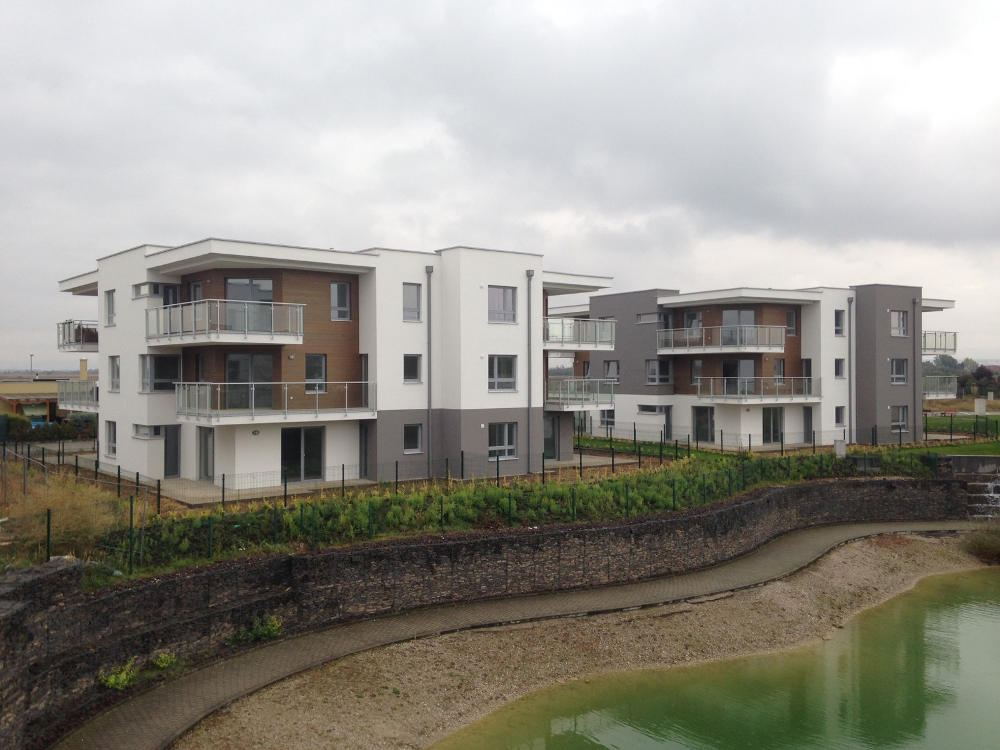
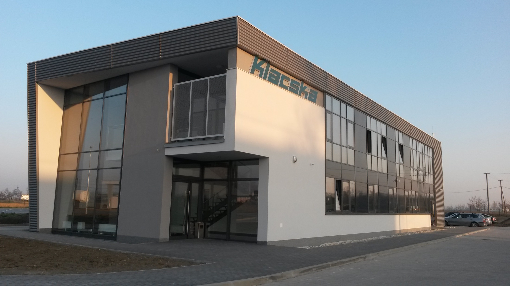
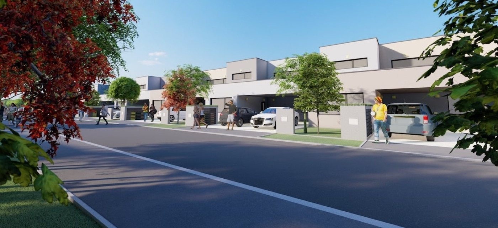
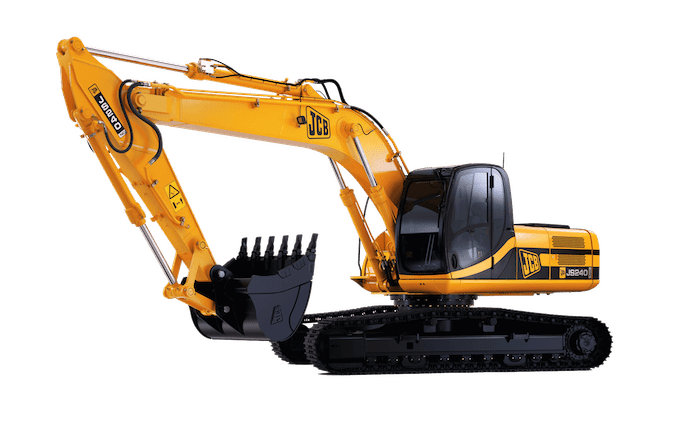
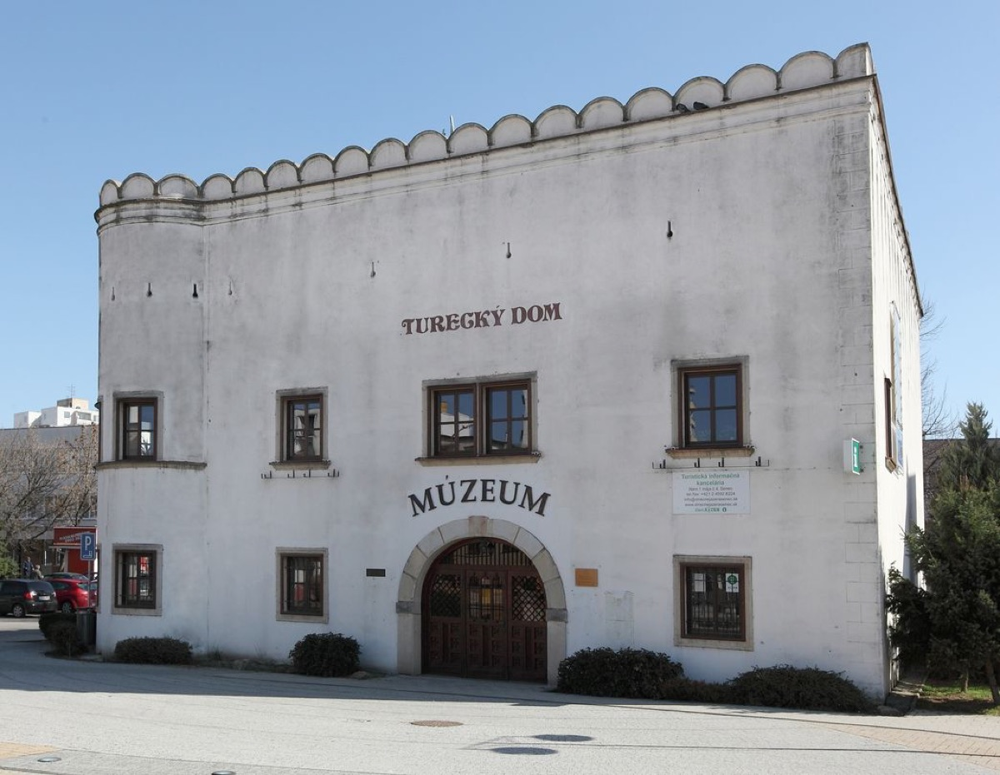
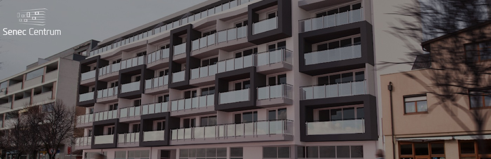
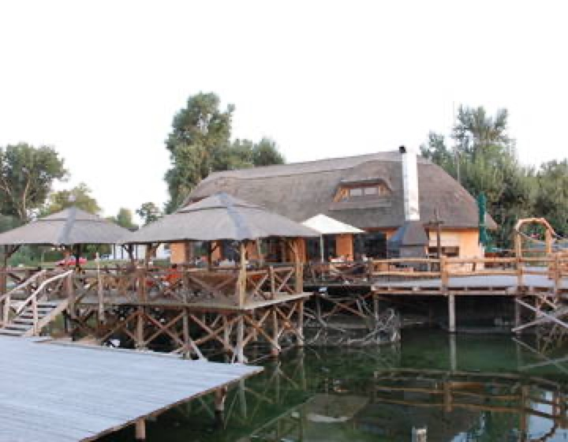
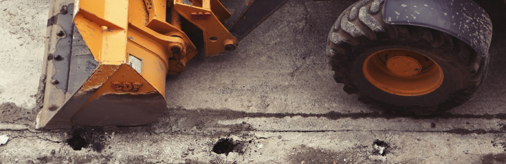

01 / Ťažisková oblasť
Stavebná činnosť
Výstavba bytových, občianskych a priemyselných objektov, vrátane rekonštrukcií a hrubých stavieb podľa rozsahu zákazky.
Konzultovať projekt
Stavebná spoločnosť zo Senca
KVALSTAV zabezpečuje realizáciu bytových, občianskych a priemyselných objektov. Od prvého zadania po odovzdanie stavby — s miestnym zázemím priamo v Senci.
Realizácia: KLACSKA – sídlo spoločnosti, Senec
O spoločnosti
Dnešný KVALSTAV nadväzuje na spoločnosť Topor‑Kvál, založenú začiatkom roka 1995. Firma vyrástla na realizáciách v Senci a okolí — od rekonštrukcie Tureckého domu až po bytové domy, občianske stavby a priemyselné areály.
Od základov po odovzdanieStavebné projekty zabezpečujeme v súvislom procese a koordinujeme jednotlivé profesie podľa konkrétneho zadania.
Pre investorov aj firmyRealizujeme objekty pre bývanie, občiansku vybavenosť, podnikanie a priemyselné využitie.
Lokálne zázemieVlastný stavebný dvor a sídlo na Pribinovej ulici nám dávajú pevný pracovný bod v meste Senec.
Skúsenosť naprieč typmi staviebPortfólio zahŕňa nové stavby, rekonštrukcie, hrubé stavby aj investičné projekty spoločnosti.
Oblasti činnosti
Ťažiskom firmy je stavebná a investičná činnosť. Dopĺňa ju vlastná mechanizácia a ubytovanie pre pracovníkov v Senci.

Výstavba bytových, občianskych a priemyselných objektov, vrátane rekonštrukcií a hrubých stavieb podľa rozsahu zákazky.
Konzultovať projekt
Príprava a realizácia priestorov pre bývanie a obchod, medzi ktoré patria projekty Senec Centrum a Radovka Záhradky.
Pozrieť projektyZemné stroje, sklápače, nakladače a menšia stavebná technika.
Prehľad techniky
Praktická možnosť nocľahu pre pracovné skupiny priamo v meste. Rezervácia a aktuálna dostupnosť sa potvrdzujú telefonicky.
Vybrané realizácie
Dopravné a servisné stredisko s administratívnou budovou, umyvárňou cisterien, vlastnou čerpacou stanicou a odstavnou plochou. KVALSTAV realizoval zákazku od základov po kolaudáciu.

Rekonštrukcia historickej pamiatky na Námestí 1. mája patrila medzi prvé zákazky realizované kompletne v réžii firmy.

Bytový dom v centre mesta so 36 bytmi rozloženými na šiestich nadzemných podlažiach.

Realizácia hrubej stavby reštaurácie v rekreačnej lokalite Slnečné jazerá.
Priebeh spolupráce
Konkrétny rozsah a forma spolupráce vždy vychádzajú z typu stavby, pripravenosti projektu a požiadaviek investora.
Prejdeme si zámer, rozsah stavby a dostupné podklady.
Spresníme postup realizácie a pripravíme cenovú ponuku.
Zabezpečíme stavebné práce a koordináciu dohodnutého rozsahu.
Dokončenú časť alebo celé dielo odovzdáme podľa dohody.

Prenájom mechanizácie
KVALSTAV ponúka prenájom väčšej mechanizácie aj menšej stavebnej techniky. Konkrétnu dostupnosť, obsluhu a cenu potvrdí vedúci dopravy individuálne.
Kontakt: Ladislav Cýcha, vedúci dopravy · +421 903 206 703 · cycha@kvalstav.sk
Ubytovňa Senec
Ubytovňa KVALSTAV ponúka pracovníkom možnosť ubytovania priamo v meste Senec. Aktuálnu kapacitu a cenu si overte pri rezervácii.
Kontakt